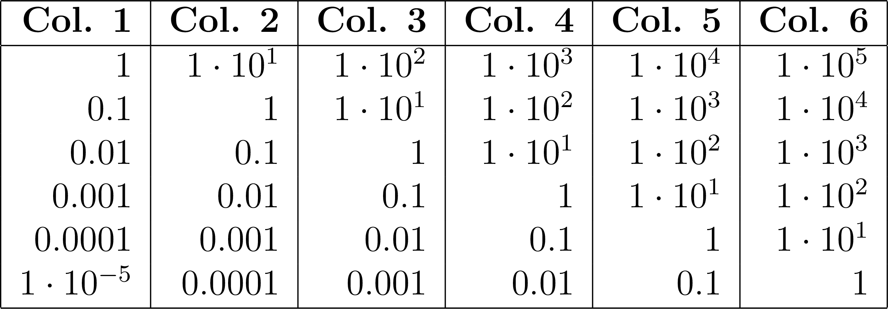

Usage
The tables are printed using the function pretty_table:
pretty_table(table; kwargs...) -> Nothing
pretty_table(io::IO, table; kwargs...) -> Nothing
pretty_table(String, table; kwargs...) -> String
pretty_table(HTML, table; kwargs...) -> HTMLThe first method prints the table to stdout. If the first argument is of type IO, the table is printed to it. If it is String, the function returns a String with the printed table, and if it is HTML, the function returns an HTML object with the table.
When printing, the function verifies if table complies with the Tables.jl API. If it is compliant, this interface is used to print the table. Otherwise, only the following types are supported:
AbstractVector: any vector can be printed.AbstractMatrix: any matrix can be printed.AbstractDict: the keys and the values are printed in two columns. Notice that a dictionary that complies with the Tables.jl API (e.g., a dictionary of column vectors withSymbolorStringkeys) is printed as a table instead.
Data with more than two dimensions is not supported.
Table Sections
PrettyTables.jl considers the following table sections when printing a table:
TITLE
Subtitle
┌────────────┬───────────────────┬──────────────┬──────────────┬───┬──────────────┐
│ Row Number │ Stubhead Label │ Column Label │ Column Label │ ⋯ │ Column Label │
│ │ │ Column Label │ Column Label │ ⋯ │ Column Label │
│ │ │ ⋮ │ ⋮ │ ⋯ │ ⋮ │
│ │ │ Column Label │ Column Label │ ⋯ │ Column Label │
├────────────┼───────────────────┼──────────────┼──────────────┼───┼──────────────┤
│ 1 │ Row Label │ Data │ Data │ ⋯ │ Data │
│ 2 │ Row Label │ Data │ Data │ ⋯ │ Data │
├────────────┴───────────────────┴──────────────┴──────────────┴───┴──────────────┤
│ Row Group Label │
├────────────┬───────────────────┬──────────────┬──────────────┬───┬──────────────┤
│ 3 │ Row Label │ Data │ Data │ ⋯ │ Data │
│ 4 │ Row Label │ Data │ Data │ ⋯ │ Data │
├────────────┴───────────────────┴──────────────┴──────────────┴───┴──────────────┤
│ Row Group Label │
├────────────┬───────────────────┬──────────────┬──────────────┬───┬──────────────┤
│ 5 │ Row Label │ Data │ Data │ ⋯ │ Data │
│ 6 │ Row Label │ Data │ Data │ ⋯ │ Data │
│ ⋮ │ ⋮ │ ⋮ │ ⋮ │ ⋱ │ ⋮ │
│ 100 │ Row Label │ Data │ Data │ ⋯ │ Data │
├────────────┼───────────────────┼──────────────┼──────────────┼───┼──────────────┤
│ │ Summary Row Label │ Summary Cell │ Summary Cell │ ⋯ │ Summary Cell │
│ │ Summary Row Label │ Summary Cell │ Summary Cell │ ⋯ │ Summary Cell │
│ ⋮ │ ⋮ │ ⋮ │ ⋮ │ ⋯ │ ⋮ │
│ │ Summary Row Label │ Summary Cell │ Summary Cell │ ⋯ │ Summary Cell │
└────────────┴───────────────────┴──────────────┴──────────────┴───┴──────────────┘
Footnotes
Source notesAll those sections can be configured using keyword arguments as described below.
General Keywords
The following keywords are related to table configuration and are available in all back ends:
backend::Symbol: Back end used to print the table. The available options are:text,:markdown,:html,:latex,:typst,:excel, and:docx. If it is:auto, the back end is obtained from the type of the keywordtable_formator, if the latter does not select a back end, from the type of the keywordstyle, falling back to:textif none of them is present or if they are the backend-agnosticTableFormatandTableStyle, which do not select a back end. (Default::auto)
IOContext Arguments
compact_printing::Bool: Iftrue, the table will be printed in a compact format, i.e, we will pass the context option:compact => truewhen rendering the values. (Default:true)limit_printing::Bool: Iftrue, the table will be printed in a limited format, i.e, we will pass the context option:limit => truewhen rendering the values. (Default:true)
Printing Specification Arguments
show_omitted_cell_summary::Bool: Iftrue, a summary of the omitted cells will be printed at the end of the table. (Default:true)renderer::Symbol: The renderer used to print the table. The available options are:printand:show. (Default::print)
Table Sections Arguments
title::String: Title of the table. If it is empty, the title will be omitted. (Default: "")subtitle::String: Subtitle of the table. If it is empty, the subtitle will be omitted. (Default: "")stubhead_label::String: Label of the stubhead column. (Default: "")row_number_column_label::String: Label of the row number column. (Default: "Row")row_labels::Union{Nothing, AbstractVector}: Row labels. If it isnothing, the column with row labels is omitted. It must have at least one element per row, and the extra elements are ignored. (Default:nothing)row_group_labels::Union{Nothing, Vector{Pair{Int, String}}}: Row group labels. If it isnothing, no row group label is printed. For more information on how to specify the row group labels, see the section Row Group Labels. (Default:nothing)column_labels::Union{Nothing, AbstractVector}: Column labels. If it isnothing, the function uses a default value for the column labels. For more information on how to specify the column labels, see the section Column Labels. (Default:nothing)show_column_labels::Bool: Iftrue, the column labels will be printed. (Default:true)summary_rows::Union{Nothing, Vector{Function}}: Summary rows. If it isnothing, no summary rows are printed. For more information on how to specify the summary rows, see the section Summary Rows. (Default:nothing)summary_row_labels::Union{Nothing, Vector{String}}: Labels of the summary rows. If it isnothing, the function uses a default value for the summary row labels. (Default:nothing)footnotes::Union{Nothing, Vector{Pair{FootnoteTuple, String}}}: Footnotes. If it isnothing, no footnotes are printed. For more information on how to specify the footnotes, see the section Footnotes. (Default:nothing)source_notes::String: Source notes. If it is empty, the source notes will be omitted. (Default: "")
Alignment Arguments
The following keyword arguments define the alignment of the table sections. The alignment can be specified using a symbol: :l for left, :c for center, :r for right, or :n for no alignment information, or their uppercase versions. Any other symbol, including the ones returned by the functions in cell_alignment, throws an ArgumentError. The back ends that cannot omit the alignment information render :n as their default alignment (left in the text back end).
alignment::Union{Symbol, Vector{Symbol}}: Alignment of the table data. It can be aSymbol, which will be used for all columns, or a vector ofSymbols, one for each column. (Default::r)column_label_alignment::Union{Nothing, Symbol, Vector{Symbol}}: Alignment of the column labels. It can be aSymbol, which will be used for all columns, a vector ofSymbols, one for each column, ornothing, which will use the value ofalignment. (Default:nothing)continuation_row_alignment::Union{Nothing, Symbol}: Alignment of the columns in the continuation row. If it isnothing, we use the value ofalignment. (Default:nothing)footnote_alignment::Symbol: Alignment of the footnotes. (Default::l)row_label_column_alignment::Symbol: Alignment of the row labels. (Default::r)row_group_label_alignment::Symbol: Alignment of the row group labels. (Default::l)row_number_column_alignment::Symbol: Alignment of the row number column. (Default::r)source_note_alignment::Symbol: Alignment of the source notes. (Default::l)subtitle_alignment::Symbol: Alignment of the subtitle. (Default::c)title_alignment::Symbol: Alignment of the title. (Default::c)cell_alignment::Union{Nothing, Vector{<:Function}, Vector{Pair{NTuple{2, Int}, Symbol}}}: Eithernothing, a vector of functions, or a vector of coordinate/alignment pairs. Each function must have the signaturef(data, i, j)and return a valid alignment symbol ornothingfor the cell(i, j). Returningnothingleaves the cell alignment unchanged. Each pair must have the form(i::Int, j::Int) => a::Symboland sets the alignment of cell(i, j)toa. In both cases,iandjare the indices of the cell indata, which can have arbitrary axes (e.g., anOffsetArray). (Default =nothing)
Some back ends do not support all the alignment options. For example, it is impossible to define cell-specific alignment in the Markdown back end.
Styling Arguments
The following keywords configure the decoration of the table and are available in all back ends. They accept the backend-agnostic objects, which allow switching back ends without rewriting the configuration, or the native objects of the selected back end, which expose all its options.
highlighters::Vector{<:AbstractHighlighter}: Highlighters used to decorate the data cells that satisfy a condition. It accepts the generalHighlighter, which works with every back end, and the native highlighters of the selected back end. For more information, see the section Highlighters. (Default:AbstractHighlighter[])style::Union{TableStyle, <native style>}: Decoration of each table section. The fields of the backend-agnosticTableStyleoverride the corresponding fields of the default style of the selected back end. For more information, see Table Format and Style. (Default: default style of the selected back end)table_format::Union{TableFormat, <native format>}: Format of the table, which selects, for example, the lines that are drawn and their design. The fields of the backend-agnosticTableFormatoverride the corresponding fields of the default format of the selected back end. For more information, see Table Format and Style. (Default: default format of the selected back end)
Other Arguments
formatters::Union{Nothing, Vector{Function}}: Formatters used to modify the rendered output of the cells. For more information, see the section Formatters. (Default:nothing)maximum_number_of_columns::Int: Maximum number of columns to be printed. If the table has more columns than this value, the table will be truncated. If it is 0, only the continuation column is printed. If it is negative, all columns will be printed. (Default:-1)maximum_number_of_rows::Int: Maximum number of rows to be printed. If the table has more rows than this value, the table will be truncated. If it is 0, only the continuation row is printed. If it is negative, all rows will be printed. (Default:-1)merge_column_label_cells::Union{Symbol, Vector{MergeCells}}: Merged cells in the column labels. For more information, see the section Column Labels. (Default::auto)new_line_at_end::Bool: Iftrue, a new line will be printed at the end of the table. (Default:true)show_first_column_label_only::Bool: Iftrue, only the first row of the column labels will be printed. (Default:false)vertical_crop_mode::Symbol: Vertical crop mode. This option defines how the table will be vertically cropped if it has more rows than the number specified inmaximum_number_of_rows. The available options are:bottom, when the data will be cropped at the bottom of the table, or:middle, when the data will be cropped at the middle of the table. (Default::bottom)
Backend-Specific Keywords
Each back end has additional keywords and native objects to configure the output. For more information, see the corresponding pages:
Specification of Table Sections
Here, we show how to specify the table sections using the keyword arguments.
Column Labels
The specification of column labels must be a vector of elements. Each element in this vector must be another vector with a row of column labels. Notice that each vector must have the same size as the number of table columns.
For example, in a table with three columns, we can specify two rows of column labels by passing:
column_labels = [
["Column #1", "Column #2", "Column #3"],
["Subcolumn #1", "Subcolumn #2", "Subcolumn #3"]
]If the user wants only one row in the column labels, they can pass only a vector with the elements. The algorithm will encapsulate it inside another vector to match the API.
Adjacent column labels can be merged using the keyword merge_column_label_cells. It must contain a vector of MergeCells objects. Each object defines a new merged cell. The MergeCells object has the following fields:
i::Int: Row index of the merged cell.j::Int: Column index of the merged cell.column_span::Int: Number of columns spanned by the merged cell.data::Any: Data of the merged cell.alignment::Symbol: Alignment of the merged cell. The available options are:lfor left,:cfor center, and:rfor right. (Default::c)
Hence, in our example, if we want to merge the columns 2 and 3 of the first column label row, we must pass:
merge_column_label_cells = [
MergeCells(1, 2, 2, "Merged Column", :c)
]We can pass the helpers MultiColumn and EmptyCells to column_labels to create merged columns more easily. In this case, MultiColumn specifies a set of columns that will be merged, and EmptyCells specifies a set of empty columns. However, notice that in this case merge_column_label_cells must be :auto, which is the default.
MultiColumn has the following fields:
column_span::Int: Number of columns spanned by the merged cell.data::Any: Data of the merged cell.alignment::Symbol: Alignment of the merged cell. The available options are:lfor left,:cfor center, and:rfor right. (Default::c)
EmptyCells has the following field:
number_of_cells::Int: Number of columns that will be filled with empty cells.
For example, we can create the following column labels:
julia> column_labels = [ [MultiColumn(4, "Group #1"), MultiColumn(2, "Group #2")], [MultiColumn(2, "Group #1.1"), MultiColumn(2, "Group #1.2"), EmptyCells(2)], ["Test 1", "Test 2", "Test 3", "Test 4", "Test 5", "Test 6"] ];julia> pretty_table( reshape(1:12, 2, 6); column_labels, table_format = TableFormat(; horizontal_line_at_merged_column_labels = true) )┌───────────────────────────────────┬─────────────────┐ │ Group #1 │ Group #2 │ │ ────────────────┬──────────────── │ ───────┬─────── │ │ Group #1.1 │ Group #1.2 │ │ │ │ ───────┬─────── │ ───────┬─────── │ │ │ │ Test 1 │ Test 2 │ Test 3 │ Test 4 │ Test 5 │ Test 6 │ ├────────┼────────┼────────┼────────┼────────┼────────┤ │ 1 │ 3 │ 5 │ 7 │ 9 │ 11 │ │ 2 │ 4 │ 6 │ 8 │ 10 │ 12 │ └────────┴────────┴────────┴────────┴────────┴────────┘
Row Group Labels
The row group labels are specified by a Vector{Pair{Int, String}}. Each element defines a new row group label. The first element of the Pair is the row index of the row group and the second is the label. For example, [3 => "Row Group #1"] defines that before row 3, we have the row group label named "Row Group #1".
Summary Rows
The summary rows can be specified by a vector of Functions. Each element defines a summary row and the function must have one of the following signatures:
f(col)
f(data, j)where col is the current column, data is the table data, and j is the column index. In the first case, it must return the summary cell value for the referenced column. In the second case, it must return the summary cell value for the jth column. The algorithm will check if there is an applicable method for the first signature and use it if it exists. Otherwise, it will use the second signature. This verification is performed using the method applicable and col is obtained by @view data[:, j].
Notice that j is the index of the column in the data, which can have arbitrary axes (e.g., an OffsetArray). If the data is a Tables.jl source, data is a wrapper that supports the indexing of a matrix, e.g., data[:, j], whose jth column is the jth column of the table.
If we want, for example, to create two summary rows, one with the sum of the column values and other with their mean, we can define:
summary_rows = [
(data, j) -> sum(data[:, j]),
(data, j) -> sum(data[:, j]) / length(data[:, j])
]We can also use the first signature to simplify the code:
using Statistics
summary_rows = [sum, mean]If both signatures are available, the algorithm will prioritize the first one. To force the usage of the second, we can create an anonymous function as follows: (data, i) -> f(data, i). This ensures that only the second method is available.
Footnotes
The footnotes are specified by a vector of Pair{FootnoteTuple, String}. Each element defines a new footnote. The FootnoteTuple is a Tuple with the following elements:
section::Symbol: Section to which the footnote must be applied. The available options are:title,:subtitle,:column_label,:data,:row_number,:row_label,:summary_row_label, and:summary_row_cell.i::Int: Row index of the footnote considering the desired section. It must be 1 for the title and the subtitle.j::Int: Column index of the footnote considering the desired section. It is not used by the sections that span the entire row (:title,:subtitle,:row_number,:row_label, and:summary_row_label).
Notice that i and j are the 1-based positions of the cell in the section, even if the data has arbitrary axes. An ArgumentError is thrown if a footnote references an unknown section or a cell outside its section.
The second element of the Pair is the footnote text.
Hence, if we want to apply a footnote to a column label, a data cell, and a summary cell, we can define:
footnotes = [
(:column_label, 1, 2) => "Footnote in column label",
(:data, 2, 2) => "Footnote in data",
(:summary_row_cell, 1, 2) => "Footnote in summary cell"
]Formatters
The keyword formatters can be used to pass functions to format the values in the columns. It must be a Vector{Function} in which each function has the following signature:
f(v, i, j)where v is the value in the cell, and i and j are the row and column indices of the cell in the data. It must return the formatted value of the cell (i, j) that has the value v. Notice that i and j are the indices in the object passed to pretty_table, which can differ from the position of the cell in the printed table if the data has arbitrary axes (e.g., an OffsetArray). The returned value will be converted to string using the function sprint.
This keyword can also be nothing, meaning that no formatter will be used.
For example, if we want to multiply all values in odd rows of the column 2 by π, the formatter should look like:
formatters = [(v, i, j) -> (j == 2 && isodd(i)) ? v * π : v]If multiple formatters are available, they will be applied in the same order as they are located in the vector. Thus, for the following formatters:
formatters = [f1, f2, f3]each element v in the table (ith row and jth column) will be formatted by:
v = f1(v, i, j)
v = f2(v, i, j)
v = f3(v, i, j)Thus, the user must ensure that the type of v between the calls is compatible.
PrettyTables.jl provides some predefined formatters for common tasks as described in the next section.
Predefined Formatters
fmt__printf(fmt_str::String[, columns::AbstractVector{Int}]) -> FunctionApply the format fmt_str (see the Printf standard library) to the elements in the columns specified in the vector columns. If columns is not specified, the format will be applied to the entire table.
julia> data = [f(a) for a = 0:30:90, f in (sind, cosd, tand)]4×3 Matrix{Float64}: 0.0 1.0 0.0 0.5 0.866025 0.57735 0.866025 0.5 1.73205 1.0 0.0 Infjulia> pretty_table(data; formatters = [fmt__printf("%5.3f")])┌────────┬────────┬────────┐ │ Col. 1 │ Col. 2 │ Col. 3 │ ├────────┼────────┼────────┤ │ 0.000 │ 1.000 │ 0.000 │ │ 0.500 │ 0.866 │ 0.577 │ │ 0.866 │ 0.500 │ 1.732 │ │ 1.000 │ 0.000 │ Inf │ └────────┴────────┴────────┘julia> pretty_table(data; formatters = [fmt__printf("%5.3f", [1, 3])])┌────────┬──────────┬────────┐ │ Col. 1 │ Col. 2 │ Col. 3 │ ├────────┼──────────┼────────┤ │ 0.000 │ 1.0 │ 0.000 │ │ 0.500 │ 0.866025 │ 0.577 │ │ 0.866 │ 0.5 │ 1.732 │ │ 1.000 │ 0.0 │ Inf │ └────────┴──────────┴────────┘
fmt__round(digits::Int[, columns::AbstractVector{Int}]) -> FunctionRound the elements in the columns specified in the vector columns to the number of digits. If columns is not specified, the rounding will be applied to the entire table.
julia> data = [f(a) for a = 0:30:90, f in (sind, cosd, tand)]4×3 Matrix{Float64}: 0.0 1.0 0.0 0.5 0.866025 0.57735 0.866025 0.5 1.73205 1.0 0.0 Infjulia> pretty_table(data; formatters = [fmt__round(1)])┌────────┬────────┬────────┐ │ Col. 1 │ Col. 2 │ Col. 3 │ ├────────┼────────┼────────┤ │ 0.0 │ 1.0 │ 0.0 │ │ 0.5 │ 0.9 │ 0.6 │ │ 0.9 │ 0.5 │ 1.7 │ │ 1.0 │ 0.0 │ Inf │ └────────┴────────┴────────┘julia> pretty_table(data; formatters = [fmt__round(1, [1, 3])])┌────────┬──────────┬────────┐ │ Col. 1 │ Col. 2 │ Col. 3 │ ├────────┼──────────┼────────┤ │ 0.0 │ 1.0 │ 0.0 │ │ 0.5 │ 0.866025 │ 0.6 │ │ 0.9 │ 0.5 │ 1.7 │ │ 1.0 │ 0.0 │ Inf │ └────────┴──────────┴────────┘
fmt__latex_sn(m_digits::Int[, columns::AbstractVector{Int}]) -> FunctionFormat the numbers of the elements in the columns to a scientific notation using LaTeX. If columns is not present, the formatting will be applied to the entire table.
The number is first printed using Printf functions with the g modifier and then converted to the LaTeX format. The number of digits in the mantissa can be selected by the argument m_digits.
The formatted number will be wrapped in the object LatexCell. Hence, this formatter only makes sense if the selected back end is :latex.
julia> data = [10.0^(-i + j) for i in 1:6, j in 1:6]
6×6 Matrix{Float64}:
1.0 10.0 100.0 1000.0 10000.0 100000.0
0.1 1.0 10.0 100.0 1000.0 10000.0
0.01 0.1 1.0 10.0 100.0 1000.0
0.001 0.01 0.1 1.0 10.0 100.0
0.0001 0.001 0.01 0.1 1.0 10.0
1.0e-5 0.0001 0.001 0.01 0.1 1.0
julia> pretty_table(data; formatters = [fmt__latex_sn(1)], backend = :latex)
The Excel back end also provides the predefined formatter fmt__excel_stringify, which converts the values that XLSX.jl cannot handle into strings (see Excel Backend).
Highlighters
The keyword highlighters changes the decoration of the data cells that satisfy a condition. It must be a vector of highlighters. If multiple highlighters match the cell (i, j), the decoration of the first one in the vector is applied.
The general Highlighter works with every back end. It is defined by a function with the signature f(data, i, j), which returns true if the cell (i, j) must be highlighted, and by a Face with the decoration (see Faces):
julia> hl = Highlighter((data, i, j) -> data[i, j] > 5, Face(; weight = :bold, foreground = :red));julia> pretty_table([1 10; 3 7]; highlighters = [hl])┌────────┬────────┐ │ Col. 1 │ Col. 2 │ ├────────┼────────┤ │ 1 │ 10 │ │ 3 │ 7 │ └────────┴────────┘julia> pretty_table([1 10; 3 7]; backend = :markdown, highlighters = [hl])| **Col. 1** | **Col. 2** | |-----------:|-----------:| | 1 | **10** | | 3 | **7** |julia> pretty_table([1 10; 3 7]; backend = :latex, highlighters = [hl])\begin{tabular}{|r|r|} \hline \textbf{Col. 1} & \textbf{Col. 2} \\ \hline 1 & \textcolor[HTML]{A51C2C}{\textbf{10}} \\ 3 & \textcolor[HTML]{A51C2C}{\textbf{7}} \\ \hline \end{tabular}
The same highlighter also decorates the cells in the HTML back end:
pretty_table(HTML, [1 10; 3 7]; highlighters = [hl])| Col. 1 | Col. 2 |
|---|---|
| 1 | 10 |
| 3 | 7 |
Notice that i and j are the indices of the cell in data, which is the object passed to pretty_table. Hence, data[i, j] is always the cell value, even if data has arbitrary axes (e.g., an OffsetArray).
A highlighter can also be created from the keywords of Face:
Highlighter((data, i, j) -> data[i, j] > 5; weight = :bold, foreground = :red)or from a function with the signature fd(h, data, i, j) that returns the face of each highlighted cell, where h is the highlighter:
julia> hl = Highlighter( (data, i, j) -> true, (h, data, i, j) -> Face(; foreground = data[i, j] > 5 ? :red : :blue), );julia> pretty_table([1 10; 3 7]; highlighters = [hl])┌────────┬────────┐ │ Col. 1 │ Col. 2 │ ├────────┼────────┤ │ 1 │ 10 │ │ 3 │ 7 │ └────────┴────────┘
If the highlighters are used together with Formatters, the change in the format will not affect the parameter data passed to the highlighter function f. It will always receive the original, unformatted value.
Each back end also has a native highlighter (for example, TextHighlighter and HtmlHighlighter), whose decoration can also be described using the native objects of the back end. Highlighters of different types can be mixed in the keyword highlighters. The face of a general highlighter is converted to the native decoration of the selected back end once per printed table.
PrettyTable Object
The structure PrettyTable stores the data and configuration options required to print a table. The table to be displayed is specified by the data field, while any additional configuration options, corresponding to the keyword arguments accepted by the pretty_table function, can be set as fields with matching names.
Users can overload the show function to customize how the table is printed for different MIME types. PrettyTables.jl provides a default show method for printing tables to stdout.
julia> matrix = [(i, j) for i in 1:4, j in 1:4]4×4 Matrix{Tuple{Int64, Int64}}: (1, 1) (1, 2) (1, 3) (1, 4) (2, 1) (2, 2) (2, 3) (2, 4) (3, 1) (3, 2) (3, 3) (3, 4) (4, 1) (4, 2) (4, 3) (4, 4)julia> pt = PrettyTable(matrix)┌────────┬────────┬────────┬────────┐ │ Col. 1 │ Col. 2 │ Col. 3 │ Col. 4 │ ├────────┼────────┼────────┼────────┤ │ (1, 1) │ (1, 2) │ (1, 3) │ (1, 4) │ │ (2, 1) │ (2, 2) │ (2, 3) │ (2, 4) │ │ (3, 1) │ (3, 2) │ (3, 3) │ (3, 4) │ │ (4, 1) │ (4, 2) │ (4, 3) │ (4, 4) │ └────────┴────────┴────────┴────────┘julia> pt.table_format = TableFormat(; @no_vertical_lines);julia> pt──────────────────────────────── Col. 1 Col. 2 Col. 3 Col. 4 ──────────────────────────────── (1, 1) (1, 2) (1, 3) (1, 4) (2, 1) (2, 2) (2, 3) (2, 4) (3, 1) (3, 2) (3, 3) (3, 4) (4, 1) (4, 2) (4, 3) (4, 4) ────────────────────────────────julia> pt.formatters = [(v, i, j) -> "$(v[1]) <=> $(v[2])"]1-element Vector{Main.var"#23#24"}: #23 (generic function with 1 method)julia> pt──────────────────────────────────── Col. 1 Col. 2 Col. 3 Col. 4 ──────────────────────────────────── 1 <=> 1 1 <=> 2 1 <=> 3 1 <=> 4 2 <=> 1 2 <=> 2 2 <=> 3 2 <=> 4 3 <=> 1 3 <=> 2 3 <=> 3 3 <=> 4 4 <=> 1 4 <=> 2 4 <=> 3 4 <=> 4 ────────────────────────────────────julia> pt.formatters = nothingjulia> pt──────────────────────────────── Col. 1 Col. 2 Col. 3 Col. 4 ──────────────────────────────── (1, 1) (1, 2) (1, 3) (1, 4) (2, 1) (2, 2) (2, 3) (2, 4) (3, 1) (3, 2) (3, 3) (3, 4) (4, 1) (4, 2) (4, 3) (4, 4) ────────────────────────────────